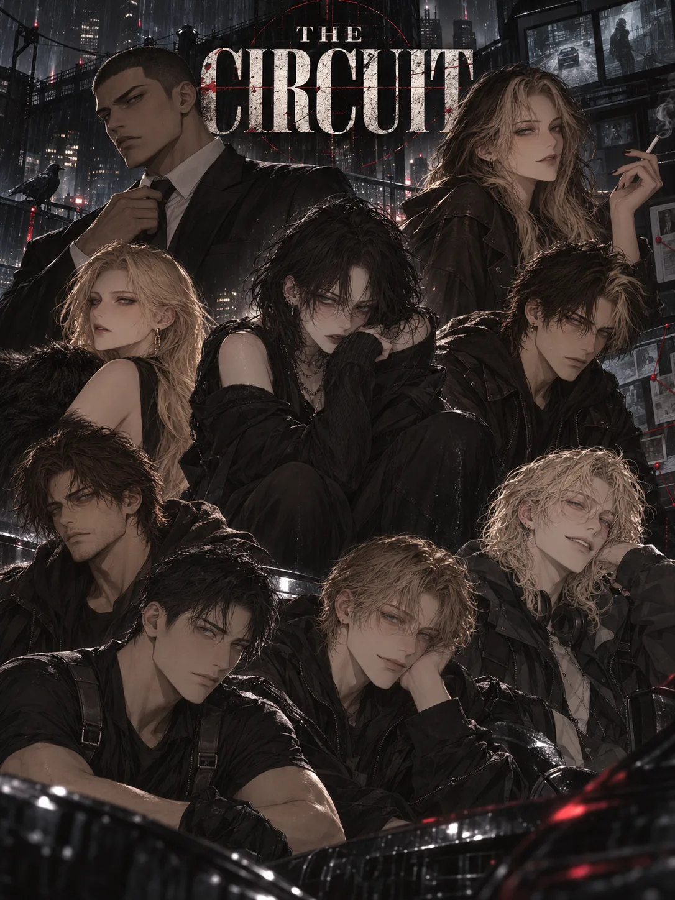

OBSERVER COALITION / 4TH GENERATION / INTERNAL ACCESS
THE
CIRCUIT
세상이 존재조차 모르는 인간들을 통제하기 위해 만들어진 폐쇄 산업. 연구, 청부, 감시, 그리고 인간을 ‘쓸모’로 환산하는 시스템.
01
CURRENT CIRCUIT
현재 세력 구도
OBSERVER
ZCL ZENITH COMBAT LEAGUE
“Everything below ZCL is still indie.”
ASDJTKFPFC8TH DIVISIONSANGRE NOVAKOKUZAN
ARCHIVE / WORLD MODEL
THE WORLD
NEVER KNEW
약 100년 전 발생한 변이 사태는 ‘전염병’으로 위장되었다. 공식적으로 종식된 사건 뒤에서 Observer와 The Circuit은 지금까지 유닛을 관리하고 있다.
01
ORIGIN
기원
01인간 변이 발생초인적 능력 + 심리·신경계 이상
↓
02비밀 국제 협약세계 주요 정부가 은폐와 통제를 선택
↓
03Observer 창설유닛 등록 · 연구 · 감시 체계 구축
↓
04전염병 위장대중에는 종식된 사건으로 발표
↓
05The Circuit리그와 청부 시스템을 통한 통제
WHAT IS THE CIRCUIT?
스포츠 리그가 아니다.
서킷은 유닛 연구 협조, 암살, 정보 공작, 특수 작전을 스포츠 산업의 외형과 용어로 포장한 폐쇄적 연구·청부 산업이다. ‘경기’, ‘리그’, ‘프리에이전트’라는 단어는 내부 브랜딩일 뿐이다.
UNIT선천적 유전자 변이 초인
LEAGUE유닛 소속 조직
MATCH청부 임무 · 작전
MATCHMAKER경기 수주 브로커
TRYOUT신입 유닛 리그 입단 심사
MAIN EVENTER최상급 전략 유닛
FULL COVER일반 사회용 위장 신분
FREE AGENT무소속 유닛
02
HISTORY
시대 구분
SYSTEM / CONTROL ARCHITECTURE
MEASURE.
ASSIGN. CONTROL.
옵저버에게 능력은 신비가 아니라 데이터다. 서킷은 유닛의 힘, 불안정성, 실전 성과를 지속적으로 측정해 배치와 통제의 근거로 사용한다.
ORGANIZATIONS / ACTIVE & DEFUNCT
LEAGUE
DIRECTORY
Observer 아래의 리그는 선수단이 아니라 계약·연구·청부 조직이다. 4세대 현재 ASD가 인디 판도를 이끌지만, ZCL은 여전히 그 모두를 ‘인디’라 부른다.
PERSONNEL / REGISTERED & UNREGISTERED
PERSONNEL
FILES
등록 유닛, 프리에이전트, 민간인. 서킷은 사람을 관계보다 먼저 분류한다.
SQUADS / DUOS
CELLS &
PARTNERSHIPS
공식 조직보다 작은 단위가 더 위험할 때가 있다. 어떤 팀은 체제를 무너뜨리고, 어떤 팀은 감시하고, 어떤 팀은 그냥 사무실에서 포커를 친다.
RELATIONSHIP / INFORMATION FLOW
NETWORK
MAP
관계는 대칭적이지 않다. 누군가는 사랑하고, 누군가는 이용하며, 누군가는 상대가 자신을 감시했다는 사실조차 모른다.
02
RELATIONSHIP DOSSIERS
관계성 추가 기록
LEVEL Ω / RESTRICTED
CLASSIFIED
DATA
이 정보는 세계관 내부 인물 모두에게 공개된 사실이 아니다. 누가 무엇을 아는지 자체가 사건을 만든다.
🔒
RESTRICTED ACCESS
비밀 스쿼드, 숨겨진 접촉, 비대칭 정보 관계를 표시합니다.